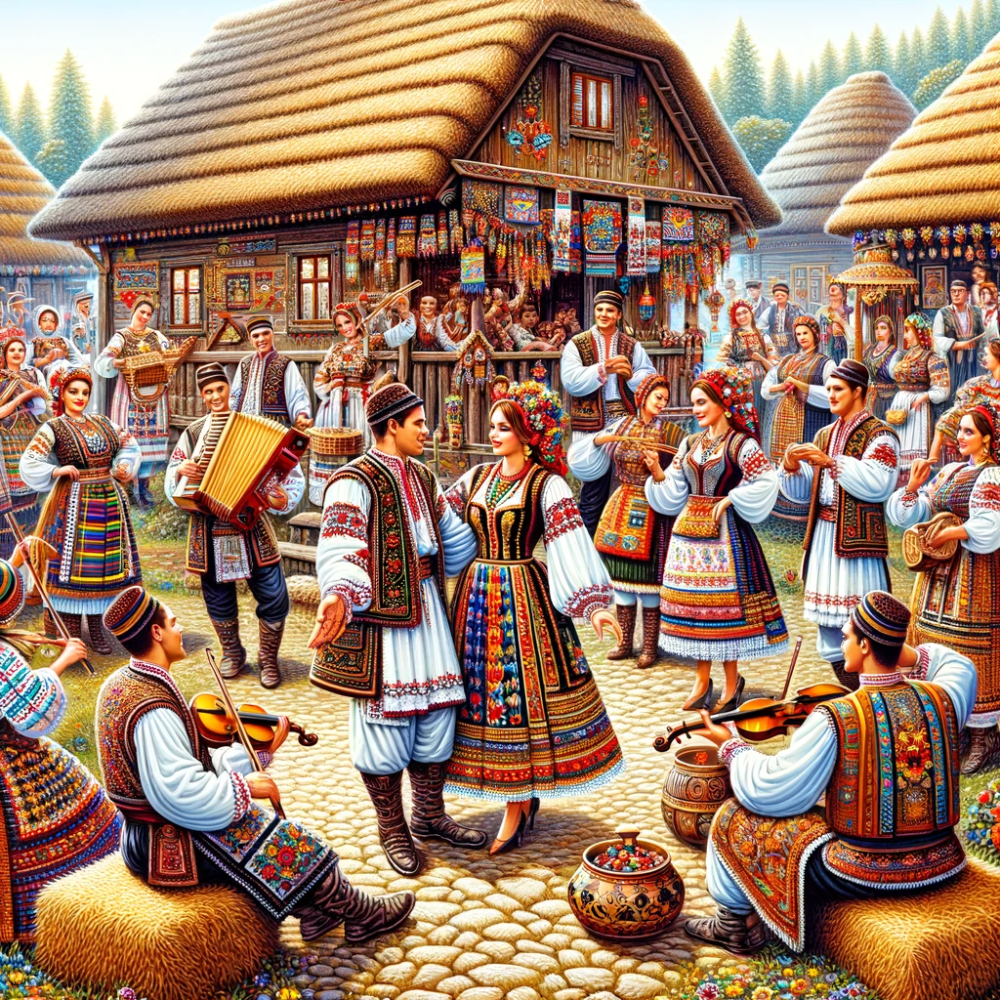

Cultura României este marcată de tradiții populare, muzică și dansuri specifice, precum și de sărbători religioase importante.
| Mărțișor | Este o tradiție veche, în care se dăruiește un mic simbol al primăverii. |
| Colindele | Tradiția colindelor de Crăciun este una dintre cele mai frumoase și iubite în România. |
